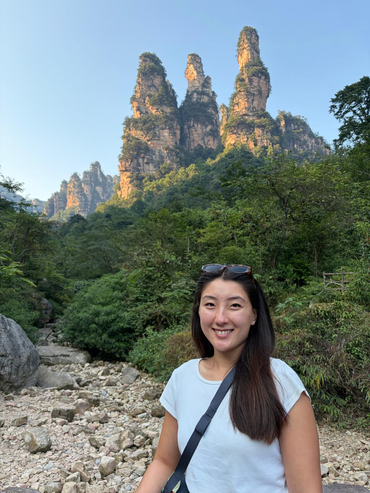
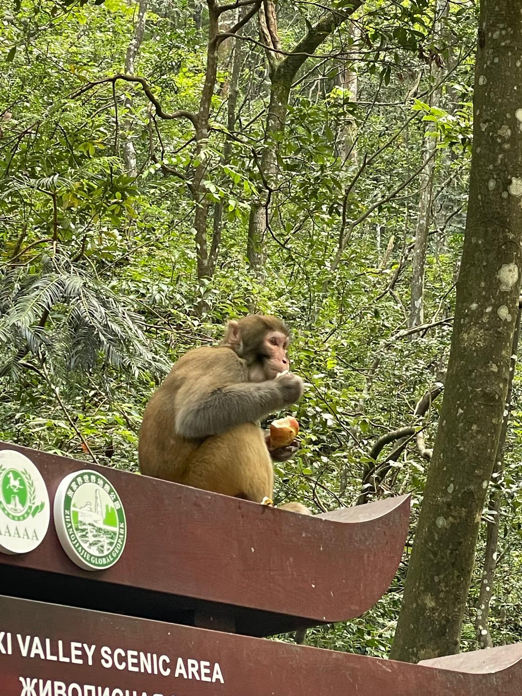
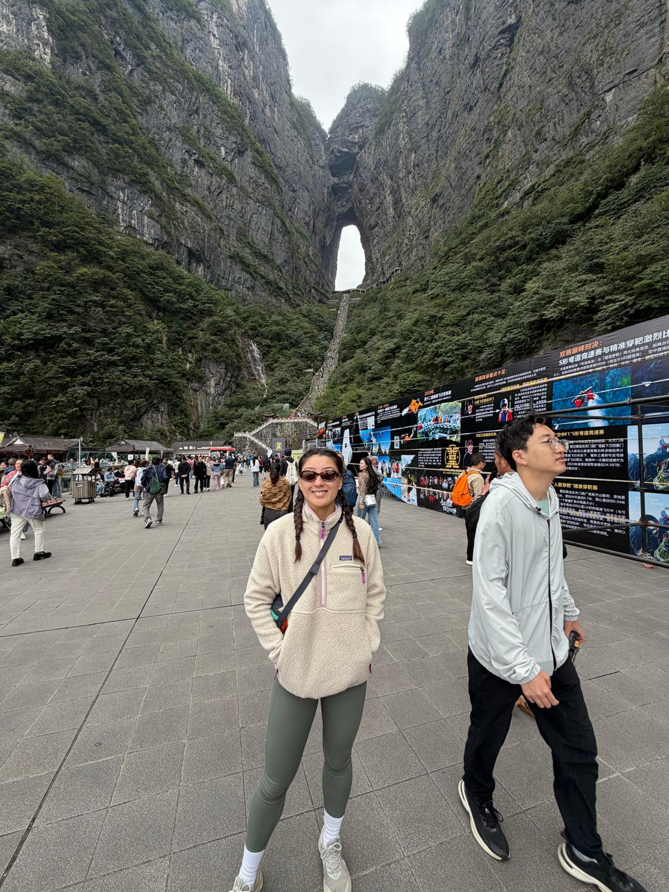

← Travel
Zhangjiajie 2026
After hearing about the legendary Avatar mountains, we headed on a train from Shanghai to Zhangjiajie.

8th September 2026
We hopped on a high speed train to Zhangjiajie in the morning. We zoomed by the countryside for 5 hours, occasionally passing through supposedly rural towns which were actually very built up. We had enough time in the afternoon to head to the National Park, hop on a cute little train and walk down to see some of the famous pillars that Zhangjiajie is famous for. We bought an astounding piece of art using ink and hands to depict the mountains.

9th September 2026
This time we got the elevator up to a high point to walk amonst the tops of the pillars. On a slightly misty day the view was enhanced and it felt like there was true mystery to the National Park. We had a fruit drink which tasted like banana, and of course had to try the Chinese McDonalds with Taro pie! We got the cable car back down with epic views and made our way over to the monkeys. On our way we saw my doppleganger (I think he looked exactly like me, Sophie disagreed). We were at first disappointed at the lack of monkeys but we were soon rewarded with a plethora and even baby monkeys. On our way down we picked up some bubble tea before relaxing back at the hotel.

10th September 2026
We started by packing our bags but we had on more stop before leaving Zhanjajie. We hopped on another cable car up to Tianmen Mountain. But that wasn't all, there was a bus still to come on windy roads. The bus driver was not messing around and took the corners at speed despite the steep drop off either side. Reaching the top there were a set of stairs or an escalator up to the large gate in the rock. I took the stairs obviously but was regretting my decision towards the end. We walked around the top of the mountain and saw some base jumpers, went to an old temple and walked on the glass pathway which was terrifying. After we hopped on our overnight train although it wasn't such a smooth ride... We had our own private cabin but had a little trouble sleeping because there were people smoking and it was HOT.